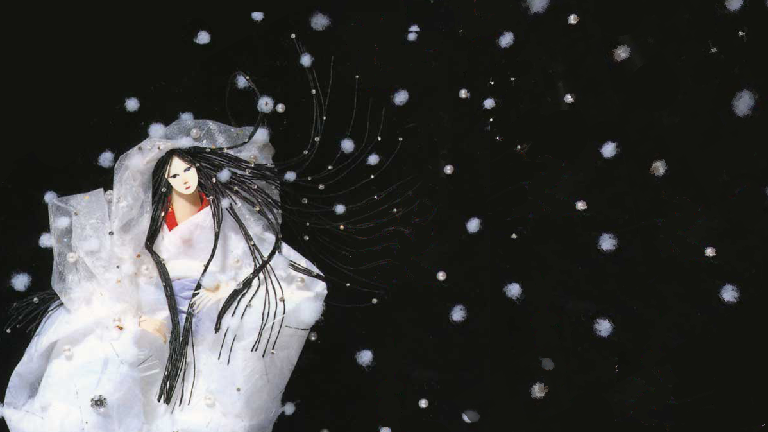
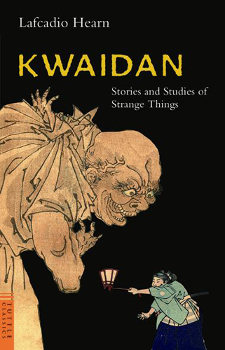
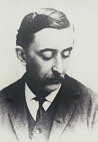
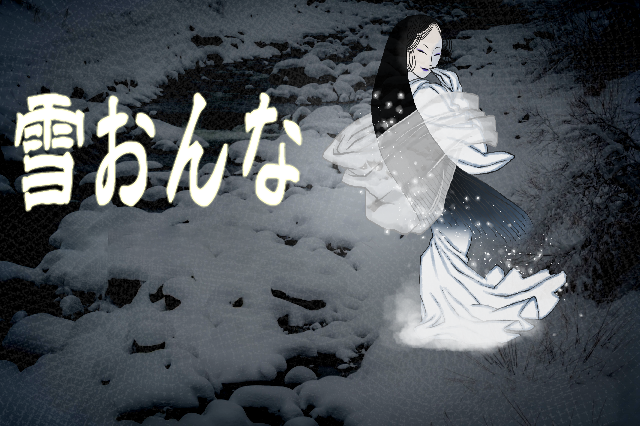
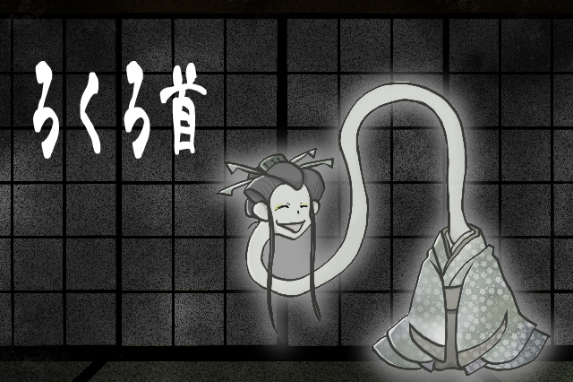
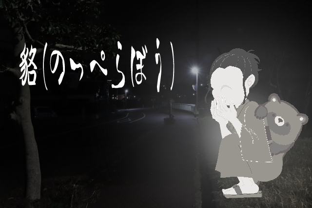

暑い夏には
小泉八雲
「怪談」
を読みませんか？
日本古来のホラーを集めた小説 怪談

小説「怪談」を執筆したのは、ギリシャ出身の白人小説家、ラフカディオ・ハーン(小泉八雲)氏です。
明治時代に日本の土を踏んだハーン氏は、日本の怪談"(ばけものや幽霊が登場する寓話")の魅力に惚れ込みました。
「怪談の魅力を世界へ広めたい」と考えたハーン氏が、日本の怪談を聞き集め、一冊の英語の本にまとめたことで、小説「怪談」は誕生したのです。
著者 ラフカディオ・ハーン氏について

ハーン氏は、1850年のギリシャに生を受けた小説家です。彼は、1980年(明治23年)に、アメリカの出版社の社員(ジャーナリスト)として来日しましたが、その後雇用契約を破棄。年の離れた日本人の妻である"小泉節子"と結婚し、英語教師として働きつつ、日本の民話や伝承の研究を行ったとされます。彼は、"故郷を捨てても探求したい"と思えるほど、日本国と文化、日本人を愛した人物だったと言えるでしょう。
「怪談」に登場する妖怪たち



書籍の情報
書名：怪談
読み：カイダン
英書名：Kwaidan
原文言語：英語
日本語版書籍の例とISBNコード
偕成社文庫版：978-4036515509
角川文庫版：978-4042120018
ポプラ社文庫版:978-4591009307
HP使用画像 一覧
小泉八雲 写真illustAC ギルド様 イラスト素材：和風イラストの雪女
illustAC 乙姫の花笠様 イラスト素材：ろくろくびと猫
illustAC そーふぁっと様 のっぺらぼう
illustAC 食べられる前頭葉様 ぽんぽこたぬきさん
怪談(英文版)-KWAIDAN(タトルクラシックス) 書影
偕成社文庫 怪談 書影